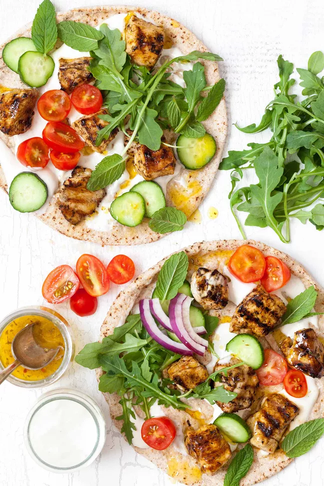

Greek Chicken Skewers with Yogurt Sauce (Chicken Souvlaki)

Ingredients:
- Finely grated zest of 1 lemon
- 1/4 cup lemon juice (from 2 lemons)
- 1/2 teaspoon dried oregano
- 1 clove garlic, finely chopped
- Kosher salt and freshly ground black pepper, to taste
- 1 teaspoon Maras pepper (or substitute 1/2 teaspoon paprika plus 1/8 teaspoon cayenne pepper)
- 1/3 cup olive oil
- 1 pound boneless, skinless chicken breasts, cut into 3/4-inch cubes
Steps:
- Make the chicken marinade: in a medium bowl whisk, combine the lemon zest, lemon juice, oregano, garlic, Maras pepper (or cayenne and paprika), salt, and pepper. Gradually whisk in the olive oil.
- Marinate the chicken: scoop out and set aside 1/4 cup of the marinade to use when serving. Add the chicken pieces to the bowl with the remaining marinade. Cover and refrigerate for 30 minutes, or for up to 2 hours. (Longer is better if you have time!)
- Make the yogurt sauce: in a small bowl, whisk the tahini and yogurt together until smooth. Stir in 3 teaspoons of lemon juice, salt and pepper. Taste and add more lemon juice, salt, or pepper as needed.
- If cooking on an outdoor grill: if cooking on an outdoor grill, soak 6 bamboo skewers in warm water (or use metal skewers).
- Cook the chicken: to cook the chicken on a grill: light a charcoal grill or turn a gas grill to medium-high. Oil the grates before grilling. Thread the chicken pieces on metal or soaked bamboo skewers while the grill is heating. Grill, turning occasionally, for 3 to 4 minutes, or until seared on the outside and cooked through to an internal temperature of 165F. Transfer the cooked chicken to a platter and set aside. To cook the chicken on the stovetop: set a cast iron grill pan over medium-high heat and heat until hot. A flick of water should sizzle instantly on contact. Turn on a vent fan or open a window; the chicken will be smoky. Add a teaspoon of oil to the grill pan and swirl to coat. Working in batches if necessary, lay the chicken pieces on the hot grill pan and cook, turning often with tongs, for 4 to 6 minutes, or until seared on the outside and cooked through to an internal temperature of 165F. Transfer the cooked chicken to a platter and set aside.
- Warm the pita bread: on the hot grill pan or on the outdoor grill, warm the pita bread for a minute or two, turning once, until slightly puffed and warm to the touch.
- Assemble the souvlaki sandwiches: spread each pita with 2 tablespoons or more of the yogurt sauce, to taste. Top each with a quarter of the chicken pieces, tomatoes, cucumber, onion, arugula, and mint. Drizzle with a few spoonfuls the reserved marinade and serve.
Back to main page